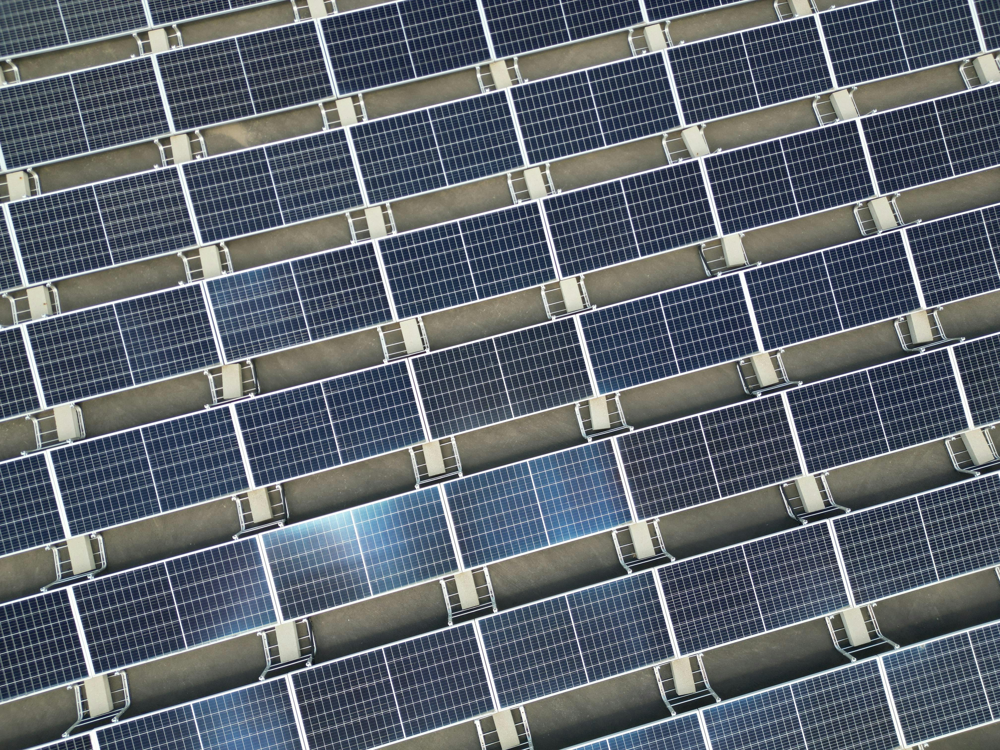
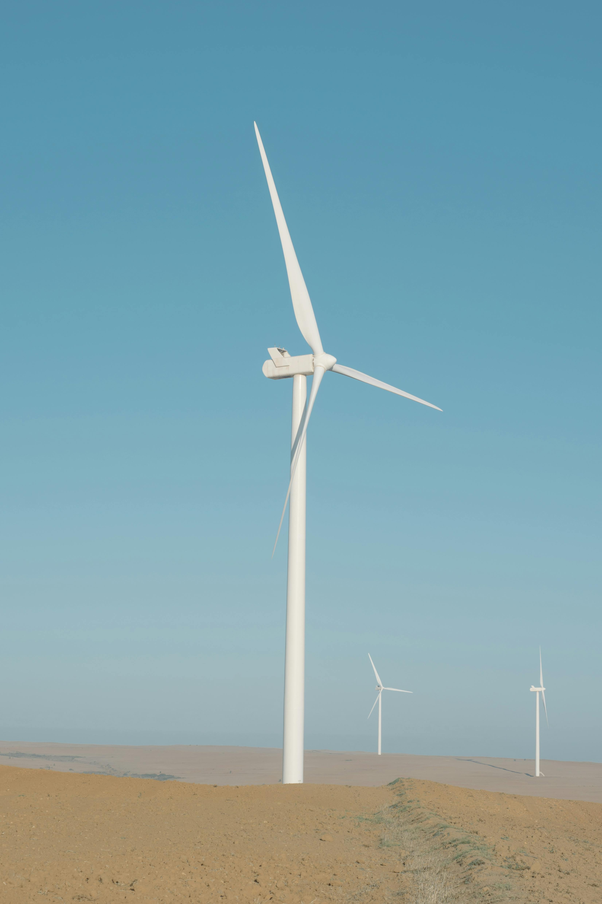

Energia limpa e Renovável: o Futuro da Energia
Tipos de energia limpa
Energia solar
o que é energia solar
Energia solar é a energia proveniente da luz e do calor do Sol, captada e convertida em energia elétrica ou térmica. É uma fonte renovável, limpa e inesgotável, amplamente utilizada via painéis fotovoltaicos (para gerar eletricidade) ou aquecedores solares (para aquecer água), ajudando na sustentabilidade.

Energia eólica
o que é energia eólica
A energia eólica é a transformação da força dos ventos (energia cinética) em energia elétrica, utilizando aerogeradores ou turbinas eólicas. É uma fonte de energia limpa, renovável e inesgotável, fundamental para a redução de gases de efeito estufa e a transição energética.

hidrelétrica
o que é energia hidrelétrica
A energia hidrelétrica é a eletricidade gerada a partir da força da água em movimento, como rios e quedas d'água. É uma fonte renovável e a principal fonte de eletricidade no Brasil, respondendo por cerca de 63% a 67% da energia gerada no país. As usinas convertem a energia cinética da água em energia mecânica, e depois em elétrica.

Biomassa
o que é energia Biomassa
A energia de biomassa é uma fonte renovável obtida da matéria orgânica não fóssil, como bagaço de cana, resíduos agrícolas, madeira e dejetos animais. Ela transforma resíduos em eletricidade, calor ou biocombustíveis (etanol, biodiesel, biogás) através de processos como combustão ou biodigestão, ajudando a reduzir a dependência de combustíveis fósseis.

Hidrogênio-verde
o que é energia Hidrogênio-verde
A energia hidrogênio é uma fonte de energia limpa e um vetor energético versátil, produzido principalmente pela eletrólise da água (\(H_{2}O\)) ou reforma de combustíveis, que emite apenas vapor de água ao ser consumido. É considerado o "combustível do futuro" para descarbonizar setores de difícil adaptação, como indústria pesada, transporte marítimo e aviação.

geotérmica
o que é energia geotérmica
A energia geotérmica é uma fonte renovável e limpa que utiliza o calor interno da Terra, armazenado em rochas, solos e águas subterrâneas, para gerar eletricidade e aquecimento. Proveniente do calor natural do subsolo, ela é estável, inesgotável e constante, não dependendo de condições climáticas como sol ou vento.